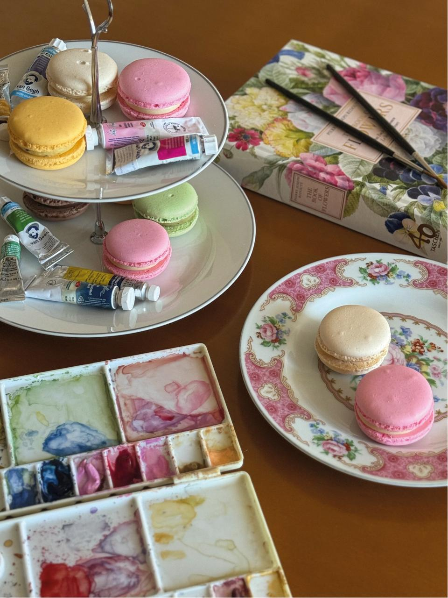
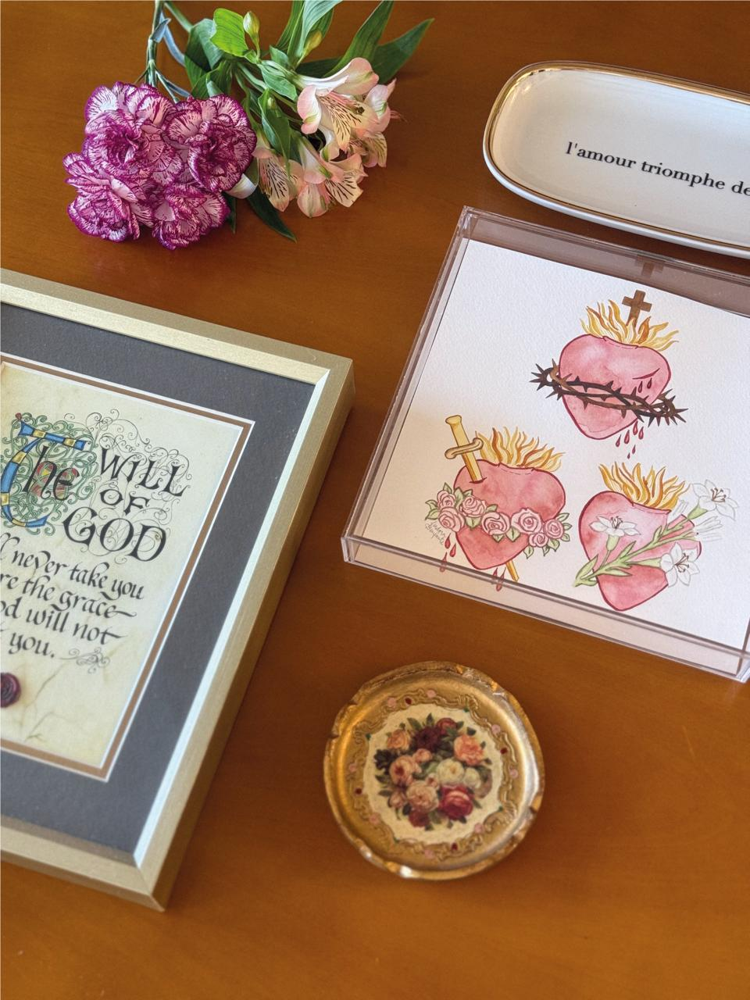
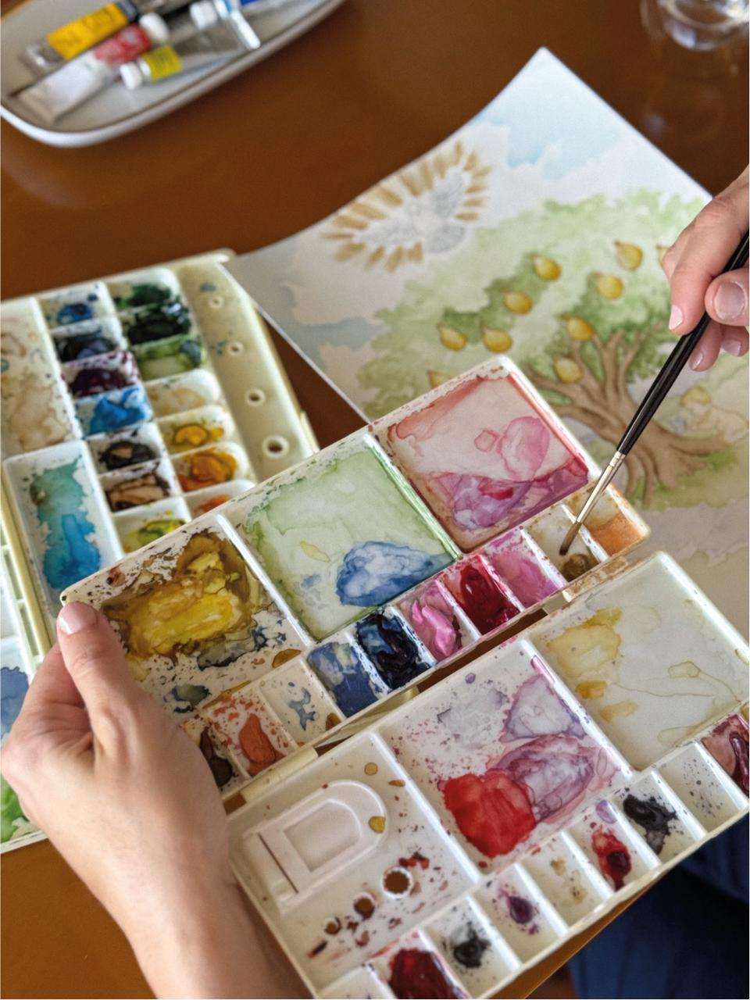
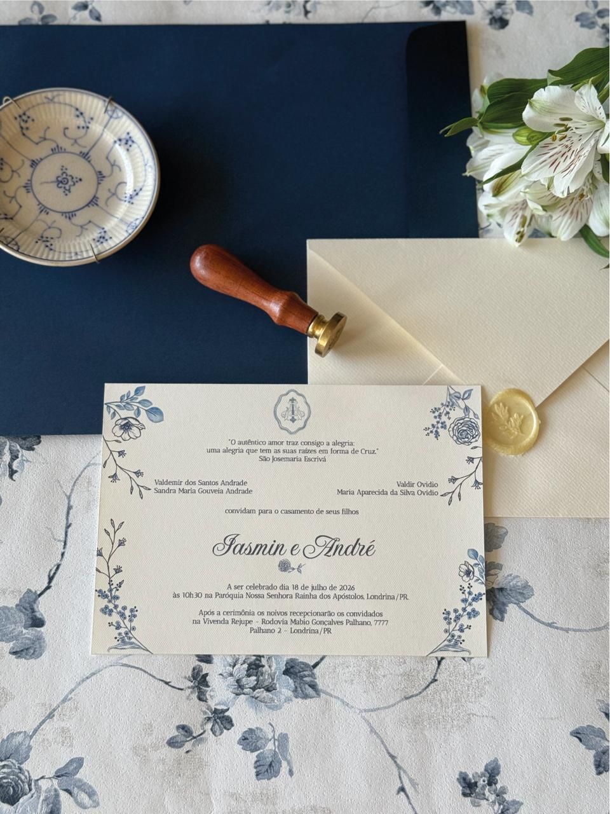
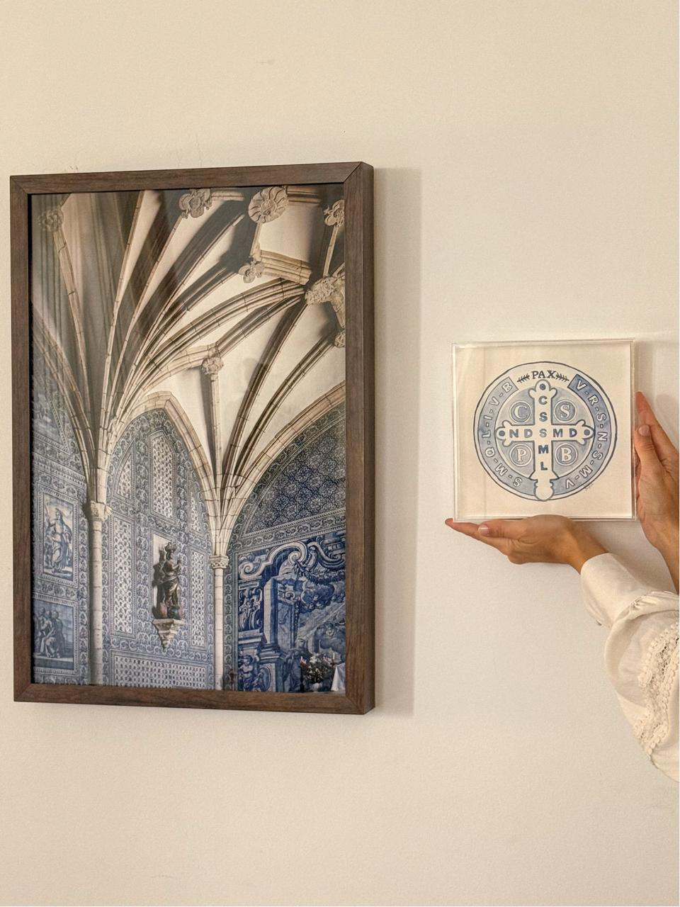
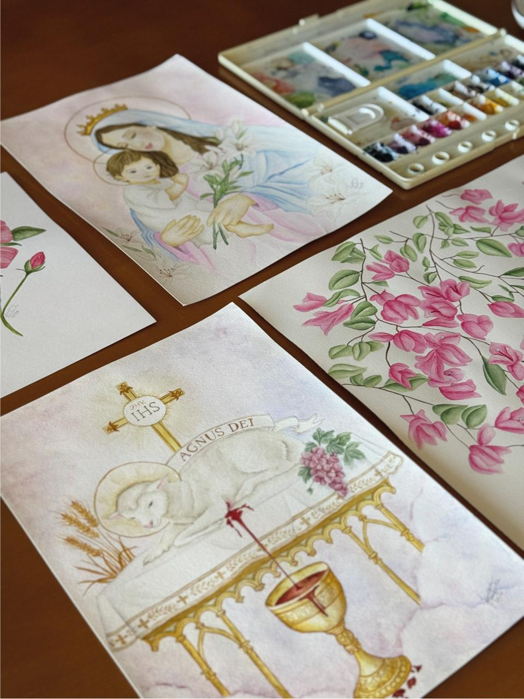
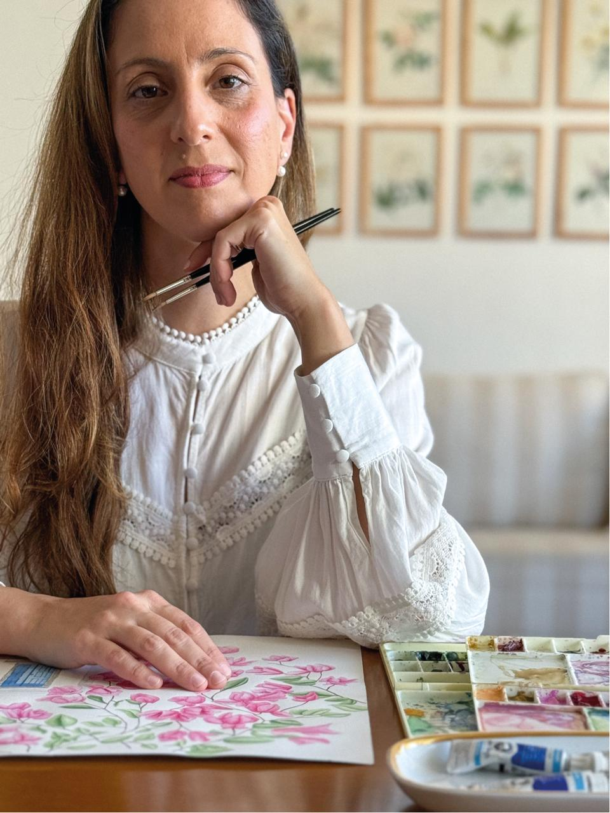

01
Casamentos
Do convite ao último brinde.

Aquarelas para histórias verdadeiras
Papelaria autoral, ilustrações sob encomenda e obras que celebram a beleza dos detalhes.
Vamos criar juntosAlguns momentos passam diante dos olhos.
Outros encontram um lugar para ficar.
O que cultivamos por aqui
Do convite ao último brinde.

Obras originais e reproduções.

Fé traduzida em cor e gesto.

Por que é único
Todo elemento é pintado à mão antes de ganhar o papel.
Nada é comprado pronto ou repetido. Cada escolha começa em você.
Papéis de alta gramatura, impressão refinada e acabamentos táteis.
Você acompanha o projeto do primeiro esboço à peça final.

Cada detalhe nasce de uma conversa, ganha cor na água e encontra sua forma no papel.


Do encontro à entrega
Você compartilha sua história, desejos e referências.
Criamos a paleta, os materiais e a atmosfera do projeto.
As artes ganham forma no papel, pigmento por pigmento.
Imprimimos, finalizamos e enviamos tudo com cuidado.

IsadoraPor trás das cores
Sou Isadora, artista e fundadora da Magnificat Paper Co. A aquarela me ensinou a respeitar o tempo da água, a beleza do imprevisto e a delicadeza de cada camada.
É assim que desenvolvo cada projeto: com presença, intenção e espaço para que a história de cada pessoa apareça.
Isadora“Foi como ver a nossa história florescer diante dos olhos. O convite chegou carregado de sentido — era profundamente nosso.”
Marina & Pedro · São Paulo
Dúvidas comuns
Para papelaria completa, recomendamos iniciar com quatro a seis meses de antecedência. Ilustrações avulsas têm prazo definido conforme a complexidade.
Sim. Cada peça viaja em uma embalagem pensada para chegar com segurança e beleza.
Algumas obras estão disponíveis em reproduções de alta qualidade. Consulte o catálogo atual.
Sim. Lugares, flores, monogramas e símbolos da história do casal podem fazer parte da identidade.
Sua história, em aquarela
Conte o que você imagina. A partir daí, começamos a construir algo inteiramente seu.
Iniciar meu projeto